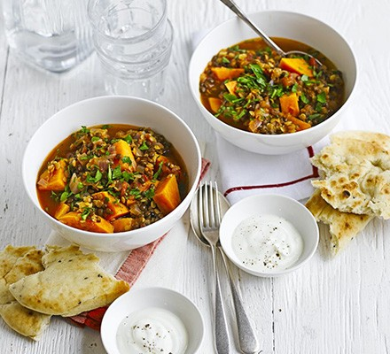

HOME
Lentil and Sweet Potato Curry

Photo from BBC good food
Description:
An amazing curry made from red and green lentils, as well as chickpeas and corriander. Serve with yogurt and naan bread. This recipe is taken from BBC good food. Click on the image to find out more. Serves 2.
Ingredients:
For the curry:
- 2 tbsp vegetable or olive oil
- 1 red onion (chopped)
- 1 tsp cumin seeds
- 1 tsp mustard seeds (any colour)
- 1 tbsp medium curry powder
- 100g red or green lentil (or a mixture)
- 2 medium sweet potatoes (peeled and cut into chunks)
- 500ml vegetable stock
- 400g can chopped tomato
- 400g can chickpea (drained)
- ¼ small pack coriander (optional)
Extras:
- natural yogurt
- and naan bread
Instructions:
- Heat 2 tbsp vegetable or olive oil in a large pan, add 1 chopped red onion and cook for a few mins until softened.
- Add 1 tsp cumin seeds, 1 tsp mustard seeds and 1 tbsp medium curry powder and cook for 1 min more, then stir in 100g red or green lentils (or a mixture), 2 medium sweet potatoes, cut into chunks, 500ml vegetable stock and a 400g can chopped tomatoes.
- Bring to the boil, then cover and simmer for 20 mins until the lentils and sweet potatoes are tender. Add a drained 400g can chickpeas, then heat through.
- Season, sprinkle with ¼ small pack coriander, if you like, and serve with seasoned yogurt and naan bread.
{kind=link}